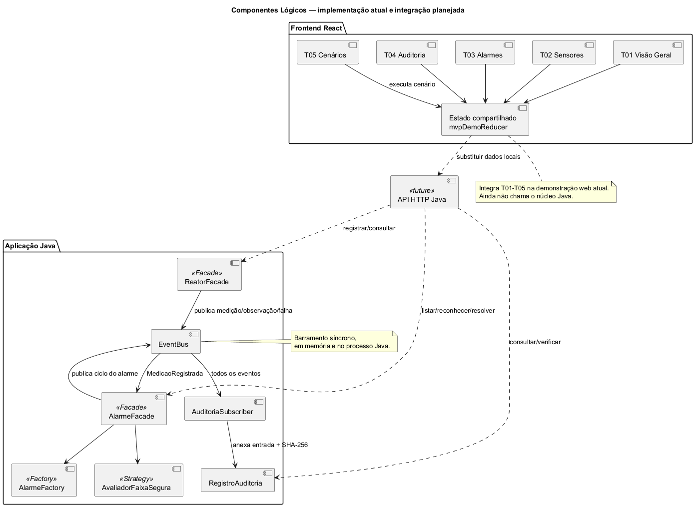
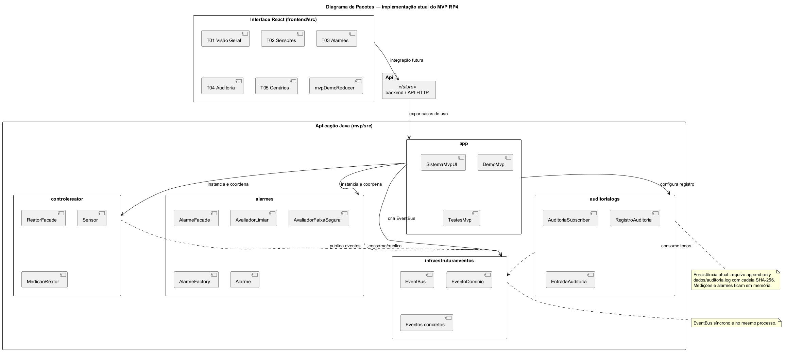
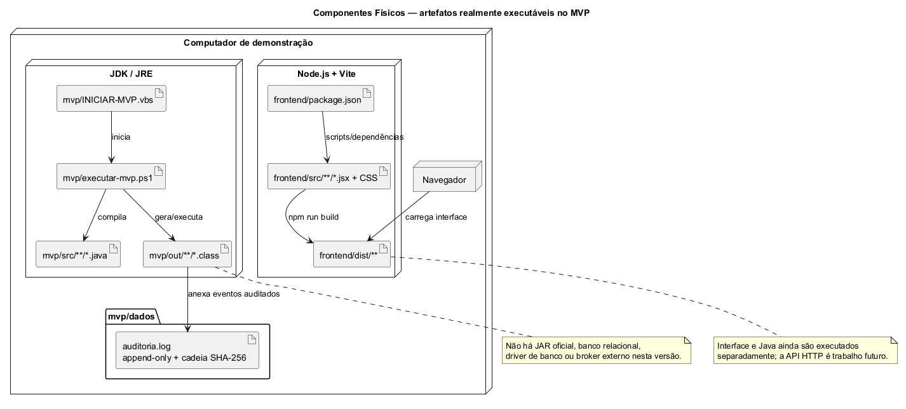
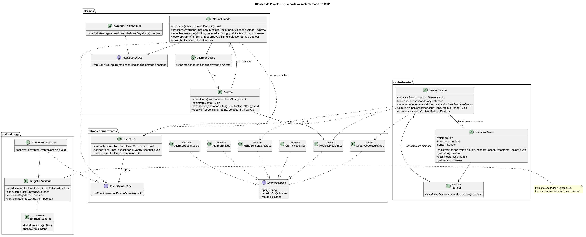

Entrega Marco 1 — RP4 (AL0343)
Sistema de Controle de Usina Nuclear
Universidade Federal do Pampa — Campus Alegrete
Repositório: https://github.com/rlampago22/RP-IV
Equipe
| Integrante |
| Álvaro Domingues |
| Bruno Rocha |
| Bernardo Dorneles |
| José Guilherme Monteiro |
| Marcus Querol |
Arquitetura: Orientada a Eventos (EDA) in-process + módulos independentes + auditoria persistente em arquivo.
Sumário da entrega
Este documento consolida o que o professor pediu para a segunda-feira (recuperação / Marco 1):
- Lista de requisitos funcionais e não funcionais
- Priorização (MoSCoW)
- Proposta de MVP
- Projeto refatorado: pacotes + componentes lógicos + componentes físicos
- Artefatos adicionais necessários: UCs, classes, sequências, ER do núcleo
- Checklist de correções dos feedbacks APS
Fontes detalhadas em Markdown, Astah e PlantUML na pasta docs/marco1/ e em docs/marcus/diagramas/.
1. Requisitos Funcionais e Não Funcionais
Ver documento completo: 01-requisitos-rf-rnf.md
RF (resumo Must)
| ID |
Requisito |
| RF01 |
Coletar medições de reator |
| RF02 |
Histórico operacional |
| RF03 |
Avaliar limiares |
| RF04 |
Emitir alarme (Operador + Supervisão Central) |
| RF05 |
Registrar evento de alarme |
| RF06 |
Auditar eventos |
RNF (resumo)
RNF01 Desempenho · RNF02 Confiabilidade · RNF03 Integridade · RNF04 Tolerância a falhas · RNF05 Auditabilidade · RNF06 Manutenibilidade · RNF07 Escalabilidade · RNF08 Segurança · RNF09 Persistência segura do núcleo · RNF10 Testabilidade — todos justificados pela EDA em 04-arquitetura-eda.md.
2. Priorização MoSCoW
Ver: 02-priorizacao-moscow.md
| Faixa |
Conteúdo |
| Must |
RF01–RF06 + artefatos de projeto do núcleo |
| Should |
RF07–RF08 Controle de acesso (RegistroAcesso) |
| Could |
RF09–RF10 Emergência + ProtocoloEmergencia |
| Won't |
Evacuação, RH, conformidade ampla, IA, microserviços reais |
3. Proposta de MVP
Ver: 03-proposta-mvp.md
Fluxo demonstrável:

Fonte UML: diagramas/componentes-logicos-mvp.puml. O EventBus implementado é síncrono e executado no mesmo processo Java.
- Marco 1: documentação e esqueleto Java
- Marco 2: fluxo Must funcional, GoF e auditoria persistente
- Marco 3: interface React T01–T05, integração HTTP e preparação da demonstração
4. Projeto arquitetural refatorado
4.1 Justificativa EDA
Ver: 04-arquitetura-eda.md
4.2 Diagrama de pacotes
Fonte: diagramas/pacotes.puml

4.3 Componentes lógicos
Fonte: diagramas/componentes-logicos.puml
Componentes com Facade, Observer/Pub-Sub, Strategy e Factory, além do estado compartilhado das telas T01–T05. A integração HTTP entre React e Java está marcada como futura.
4.4 Componentes físicos (executável)
Fonte: diagramas/componentes-fisicos.puml

Artefatos reais: fontes e classes Java, scripts de execução, log de auditoria, fontes React e build Vite. Não há JAR oficial, banco relacional, driver de banco ou broker externo nesta versão.
5. Casos de uso, classes e sequências
Pontos de correção APS aplicados: system boundary, include de alarme/auditoria, destinatários explícitos, sem if no fluxo principal, métodos/classes das sequências presentes no diagrama de classes.
6. Mapeamento relacional (núcleo)
Ver: 08-mapeamento-relacional-mvp.md · diagramas/er-nucleo-mvp.puml
Correções: enums → tabelas; VARCHAR; FKs Sensor/Medicao/Alarme/Turbina→Reator; sem N:N injustificado no núcleo.
7. Checklist de feedback APS
Ver: checklist-feedback-aps.md
8. Esqueleto de código
O núcleo funcional está em mvp/src/br/edu/unipampa/usina/, com EventBus, controle de reator, alarmes e auditoria. A pasta src/ permanece como legado do esqueleto inicial.
9. Como gerar PDF desta entrega
Opção A — exportar este arquivo + anexos pelo VS Code / Typora / Pandoc:
pandoc docs/marco1/ENTREGA-MARCO1.md -o docs/marco1/ENTREGA-MARCO1.pdf --resource-path=docs/marco1
Opção B — abrir os .puml em https://www.plantuml.com/plantuml ou extensão PlantUML e colar as imagens no PDF final da equipe.
Opção C — entregar o link do GitHub + este Markdown (conforme orientação do professor).
10. Próximos passos (Marco 2)
- Criar API HTTP Java para ligar o React ao núcleo EDA
- Substituir o estado demonstrativo do React por dados reais da API
- Decidir persistência de medições/alarmes e documentar a escolha
- Polir testes, roteiro e evidências da demonstração
- Manter Astah, documentação e código sincronizados
01 — Requisitos Funcionais e Não Funcionais
Disciplina: AL0343 — Resolução de Problemas IV
Sistema: Controle de Usina Nuclear
Equipe: Álvaro Domingues, Bruno Rocha, Bernardo Dorneles, José Guilherme Monteiro, Marcus Querol
1. Requisitos Funcionais (RF)
Escopo refinado a partir do legado APS, com foco no que o sistema de controle digital realmente faz (sensores físicos e intervenções médicas/estruturais permanecem fora).
Núcleo operacional (MVP Must)
| ID |
Requisito |
Descrição |
| RF01 |
Coletar medições de reator |
Registrar temperatura, pressão, radiação, fluxo de resfriamento e demais parâmetros operacionais recebidos dos sensores já existentes. |
| RF02 |
Histórico operacional |
Manter histórico de medições e status operacional do reator para consulta e rastreabilidade. |
| RF03 |
Avaliar limiares |
Comparar medições com limites seguros configurados. |
| RF04 |
Emitir alarme |
Quando um limiar for violado, emitir alarme e notificar Operador e Supervisão Central. |
| RF05 |
Registrar evento de alarme |
Persistir ocorrência do alarme (tipo, severidade, timestamp, sensor/medição de origem). |
| RF06 |
Auditar eventos |
Registrar trilha de eventos relevantes (medições críticas, alarmes, publicações no barramento). |
Acesso (MVP Should)
| ID |
Requisito |
Descrição |
| RF07 |
Autenticar acesso a área restrita |
Validar credencial (crachá/biometria simulada) para áreas classificadas. |
| RF08 |
Registrar acesso |
Persistir tentativa/resultado de acesso em RegistroAcesso (sucesso ou falha). |
Contingência (MVP Could)
| ID |
Requisito |
Descrição |
| RF09 |
Criar emergência |
Permitir que operador autorizado registre uma emergência (Emergencia.criarEmergencia). |
| RF10 |
Ativar protocolo de contingência |
Associar e acionar ProtocoloEmergencia a partir de uma emergência ativa. |
Fora do MVP desta disciplina (Won't — documentados para rastreio)
| ID |
Requisito |
Motivo |
| RF11 |
Gestão completa de evacuação |
Complexidade alta; fora do Must/Should |
| RF12 |
RH, cargos e treinamentos |
Não críticos para demonstrar EDA + alarmes |
| RF13 |
Relatórios de conformidade regulatória |
Pode ser derivado depois |
| RF14 |
Predição de falhas por IA |
Especulativo; não priorizado |
| RF15 |
Rastreio completo de material radioativo |
Backlog pós-núcleo |
Fora do escopo do software (infraestrutura física)
- Instalação/manutenção de sensores físicos
- Procedimentos médicos de descontaminação
- Construção de barreiras físicas de contenção
2. Requisitos Não Funcionais (RNF)
Alinhados à justificativa da arquitetura EDA mantida.
| ID |
Atributo |
Descrição |
Como a EDA contribui |
| RNF01 |
Desempenho / tempo de resposta |
Publicação de medição não deve bloquear o produtor enquanto consumidores processam. |
Comunicação assíncrona via barramento |
| RNF02 |
Confiabilidade / disponibilidade |
Falha em consumidor de relatório não derruba monitoramento crítico. |
Baixo acoplamento; fila/retenção de eventos |
| RNF03 |
Integridade |
Medições e alarmes devem ser precisos e rastreáveis à origem. |
Evento como fato; validação no produtor |
| RNF04 |
Tolerância a falhas |
Isolar falha de módulo (ex.: auditoria) sem parar ControleReator. |
Módulos independentes |
| RNF05 |
Auditabilidade |
Histórico append-only de eventos relevantes com adulteração detectável. |
Pacote AuditoriaLogs + eventos |
| RNF06 |
Manutenibilidade |
Alterar limiares/estratégia de alarme sem reescrever todo o sistema. |
Módulos + Strategy (Marco 2) |
| RNF07 |
Escalabilidade |
Possibilidade futura de escalar consumidores independentemente. |
Persistência dedicada + bus |
| RNF08 |
Segurança |
Políticas de acesso granuláveis por módulo. |
Pacote SegurancaAcesso |
| RNF09 |
Persistência segura do núcleo |
Medições e alarmes com backup/recuperação simples no MVP. |
DB dedicado do módulo reator |
| RNF10 |
Testabilidade |
Módulos testáveis com eventos simulados. |
Event bus mockável |
Situação no MVP atual
- Atendidos localmente: RNF03, RNF05, RNF06 e RNF10.
- Parciais: RNF02 e RNF04 possuem isolamento de exceções por subscriber; RNF09 persiste somente a auditoria.
- Planejados: publicação assíncrona, retenção/fila, redundância e banco para medições/alarmes. Portanto, RNF01, RNF07 e o restante de RNF09 não devem ser apresentados como concluídos.
3. Atores
| Ator |
Tipo |
Papel |
| Operador de Reator |
Primário |
Monitora medições, recebe alarmes, pode acionar contingência |
| Supervisão Central |
Secundário |
Recebe alertas e visão agregada |
| Sensor (sistema externo) |
Secundário |
Publica leituras (simulado no MVP) |
| Guarda / Controle de Acesso |
Primário (Should) |
Solicita entrada em área restrita |
| Administrador do Sistema |
Primário (config) |
Configura limiares e parâmetros |
02 — Priorização MoSCoW
Sistema: Controle de Usina Nuclear — RP4
Equipe: Álvaro Domingues, Bruno Rocha, Bernardo Dorneles, José Guilherme Monteiro, Marcus Querol
Critério: maximizar valor demonstrável da arquitetura EDA + padrões de projeto até o fim da disciplina, com entrega recuperável no Marco 1.
Must (obrigatório no MVP)
| ID |
Item |
Justificativa |
| RF01 |
Coletar medições de reator |
Fluxo produtor de eventos |
| RF02 |
Histórico operacional |
Persistência dedicada demonstrável |
| RF03 |
Avaliar limiares |
Base para alarmes |
| RF04 |
Emitir alarme (Operador + Supervisão) |
Caso de uso crítico + atores secundários explícitos |
| RF05 |
Registrar evento de alarme |
Entidade Alarme com métodos exigidos no feedback APS |
| RF06 |
Auditar eventos |
RNF05 + consumidor independente no bus |
| RNF01–RNF05, RNF09–RNF10 |
Subconjunto de qualidade do núcleo |
Sustentam escolha EDA |
Artefatos Must do Marco 1: RF/RNF, MoSCoW, proposta MVP, pacotes, componentes lógico/físico, UCs/classes/sequências do núcleo, ER do núcleo.
Should (desejável — Marco 2/3 se o núcleo estiver estável)
| ID |
Item |
Justificativa |
| RF07 |
Autenticar acesso restrito |
Amplia domínio sem mudar arquitetura |
| RF08 |
RegistroAcesso |
Corrige classe faltante do feedback APS |
| RNF08 |
Segurança granular |
Natural ao pacote SegurancaAcesso |
Could (se houver capacidade no Marco 3)
| ID |
Item |
Justificativa |
| RF09 |
Emergencia.criarEmergencia |
Feedback APS + domínio |
| RF10 |
ProtocoloEmergencia |
Classe faltante crítica no feedback |
| — |
HistoricoSubstituicao |
Só se manutenção entrar no escopo |
Won't (fora do MVP da disciplina)
| ID |
Item |
Motivo |
| RF11 |
Evacuação completa |
Escopo grande, pouco retorno para padrões |
| RF12 |
RH / capacitação / treinamento |
Feedback APS extenso; não demonstra EDA do núcleo |
| RF13 |
Conformidade regulatória ampla |
Relatórios secundários |
| RF14 |
Predição por IA |
Fora do foco GoF/arquitetura |
| RF15 |
Rastreio completo de material |
Pode ser fase futura pós-disciplina |
| — |
Microserviços reais / cluster |
EDA in-process basta no MVP acadêmico |
Ordem de implementação sugerida
- Event bus + publicação de
MedicaoRegistrada
- Persistência de medição +
MedicaoReator.registrarMedicao
- Avaliação de limiar (Strategy) +
Alarme.emitirAlerta / registrarEvento
- Consumidor de auditoria
- (Should) RegistroAcesso
- (Could) Emergencia + ProtocoloEmergencia
03 — Proposta de MVP
Sistema: Controle de Usina Nuclear
Disciplina: AL0343 — RP4
Equipe: Álvaro Domingues, Bruno Rocha, Bernardo Dorneles, José Guilherme Monteiro, Marcus Querol
1. Problema
Operadores precisam acompanhar parâmetros de reatores em tempo quase real, receber alarmes quando limites seguros são violados e manter trilha auditável dos eventos — sem acoplar o monitoramento a módulos secundários (RH, evacuação, relatórios).
2. Solução MVP
Um software Java modular com arquitetura orientada a eventos (EDA):
- A aplicação de demonstração envia leituras simuladas ao ControleReator.
- O ControleReator mantém medições em memória e publica eventos no barramento.
- O módulo Alarmes consome as medições, avalia limiares, mantém os alarmes em memória e notifica Operador e Supervisão Central pelo console.
- O módulo AuditoriaLogs consome todos os eventos e grava uma trilha append-only encadeada por SHA-256.
Nesta versão, apenas a auditoria possui persistência em arquivo. Banco para medições e alarmes, API HTTP e mensageria durável são evoluções planejadas, não funcionalidades prontas.
3. Escopo incluso (Must)
- RF01–RF06
- Diagramas de pacotes e componentes (lógico + físico)
- Casos de uso e sequências do núcleo alinhados às classes
- Mapeamento relacional corrigido do núcleo
4. Escopo excluído (Won't nesta disciplina)
Evacuação, RH/treinamentos, conformidade ampla, IA preditiva, rastreio completo de materiais, implantação em cluster.
5. Critérios de aceite do MVP (fim da disciplina / Marco 2+)
| # |
Critério |
| 1 |
É possível simular N medições e consultá-las no histórico em memória durante a execução |
| 2 |
Medição acima do limiar gera alarme em memória, notificação explícita aos atores e evento persistido na auditoria |
| 3 |
Eventos passam pelo barramento (produtor não chama consumidor diretamente) |
| 4 |
Pelo menos 3 padrões GoF documentados e visíveis no código (ex.: Observer/Pub-Sub, Strategy, Factory, Facade) |
| 5 |
README permite executar o fluxo ponta a ponta |
6. Entregas por marco
| Marco |
Entrega |
| 1 |
Documentação inicial, arquitetura e esqueleto de pacotes Java |
| 2 |
Fluxo Must funcional + padrões de projeto + auditoria persistente |
| 3 (em preparação) |
Interface React T01–T05, integração HTTP e preparação da demonstração |
7. Riscos e mitigação
| Risco |
Mitigação |
| Escopo herdar todos os UCs da APS |
MoSCoW estrito; «future» nos diagramas |
| Inconsistência classes × sequência (nota 0 APS) |
Checklist; sequências só com métodos existentes |
| Atraso |
Núcleo Must primeiro; Should/Could opcionais |
8. Valor pedagógico
O MVP demonstra exatamente o que a disciplina avalia: padrão arquitetural escolhido e justificado + aplicação de padrões de projeto em um problema contínuo da APS, sem redesenhar a arquitetura.
04 — Arquitetura Orientada a Eventos (EDA)
Sistema: Controle de Usina Nuclear — RP4
Equipe: Álvaro Domingues, Bruno Rocha, Bernardo Dorneles, José Guilherme Monteiro, Marcus Querol
Decisão: a única arquitetura do projeto é EDA (Event-Driven Architecture).
1. Decisão (EDA only)
Não adotamos arquitetura híbrida, MVC como estilo principal, nem microserviços/cluster no MVP.
Tudo no sistema se organiza em torno de eventos de domínio publicados e consumidos via barramento:
- Produtores publicam fatos (
MedicaoRegistrada, AlarmeEmitido, …)
- Consumidores reagem de forma desacoplada
- O MVP usa EventBus in-process (Java); a EDA permanece válida se o bus evoluir
Módulos, Facade e persistência dedicada não são “outras arquiteturas”: são mecanismos de realização da EDA (isolamento de produtores/consumidores e de dados do núcleo).
2. Componentes lógicos (EDA)
| Elemento |
Papel na EDA |
| Sensor / simulador |
Produtor de MedicaoRegistrada |
| InfraestruturaEventos (EventBus) |
Barramento; desacopla pub/sub |
| ControleReator |
Orquestra medição; pode publicar e disparar avaliação |
| Alarmes |
Consome/avalia; publica AlarmeEmitido |
| AuditoriaLogs |
Consumidor append-only |
| RegistroAuditoria |
Persistência em arquivo append-only com cadeia SHA-256 |
| Frontend React |
T01–T05 integradas por estado demonstrativo compartilhado |
| API HTTP |
Adaptador futuro entre a interface web e o núcleo Java |
3. Ligação aos RNFs
| RNF |
Mecanismo EDA |
| RNF01 Desempenho |
Parcial: publish síncrono no MVP; assíncrono permanece como evolução |
| RNF02 Disponibilidade |
Parcial: exceções de assinantes são isoladas, mas não há redundância |
| RNF03 Integridade |
Evento como fato; validação antes do publish |
| RNF04 Tolerância a falhas |
Isolamento por assinante/módulo |
| RNF05 Auditabilidade |
Consumidor dedicado de auditoria |
| RNF06 Manutenibilidade |
Novos consumidores sem alterar produtores |
| RNF07 Escalabilidade |
Contratos permitem novos consumidores; escala distribuída ainda não existe |
| RNF09 Persistência |
Parcial: auditoria persiste; medições/alarmes ficam em memória |
| RNF10 Testabilidade |
Eventos simulados e 11 cenários automatizados locais |
4. Fora do MVP («future»)
GestaoRH, Evacuacao, AnaliseRelatorios, rastreio amplo de materiais, etc. — legado APS, não entram no Must. Podem aparecer no diagrama de pacotes só como «future».
5. Diagramas essenciais (versionados)
Outros artefatos (Astah APS completo, ER auxiliar) ficam em arquivo legado / não são entrega ativa.
6. Stack de realização
- Backend: Java (EDA + EventBus)
- Frontend: React (Vite) — supervisão web; hoje usa estado demonstrativo compartilhado
- Integração futura: API HTTP para substituir o estado simulado por eventos reais do Java
- GoF: Observer/Pub-Sub, Strategy, Factory, Facade
05 — Casos de Uso do MVP (refatorados)
Sistema: Controle de Usina Nuclear — RP4
Equipe: Álvaro Domingues, Bruno Rocha, Bernardo Dorneles, José Guilherme Monteiro, Marcus Querol
Regras aplicadas do feedback APS (domínio usina, não militar): fluxo principal linear (sem if), system boundary, atores secundários explícitos, «include» quando o alerta é obrigatório, um UC = um objetivo.
1. Diagrama de Casos de Uso — Astah

- System Boundary:
SistemaControleUsina
- UC04 é Should e permanece documentado abaixo, fora do diagrama Must desta entrega
- UCs de evacuação/RH/materiais: backlog Won't
Fonte UML editável: Marcus-UML-MVP.asta. A imagem acima foi exportada pelo próprio Astah; não é Mermaid.
2. UC01 — Registrar Medição de Reator
| Campo |
Conteúdo |
| Nome |
Registrar Medição de Reator |
| Resumo |
Registra uma medição proveniente de sensor e dispara avaliação de limiar. |
| Ator primário |
Sensor (sistema externo) |
| Atores secundários |
Operador de Reator (acompanha o resultado em caso de alarme) |
| Pré-condições |
Sensor identificado; reator cadastrado; limiares configurados |
| Pós-condições |
Medição mantida no histórico em memória; evento MedicaoRegistrada publicado; UC02 e UC03 executados por inclusão |
Fluxo principal (linear)
| # |
Ator / Sistema |
Ação |
| 1 |
Sensor |
Envia leitura (temperatura/pressão/radiação/…) |
| 2 |
Sistema |
Valida formato e associação Sensor–Reator |
| 3 |
Sistema |
MedicaoReator.registrarMedicao(...) |
| 4 |
Sistema |
Adiciona a medição ao histórico em memória de ReatorFacade |
| 5 |
Sistema |
Publica MedicaoRegistrada no EventBus |
| 6 |
Sistema |
Inclui UC02 Emitir Alarme por Limiar |
| 7 |
Sistema |
Inclui UC03 Auditar Evento |
O fluxo termina após registrar, avaliar e auditar a medição. Consultar o histórico é outro objetivo e, portanto, não integra o UC01.
Fluxos alternativos / exceção
| ID |
Condição |
Tratamento |
| E1 |
Leitura inválida |
Sistema rejeita, registra falha de validação e não publica medição |
| E2 |
Sensor desconhecido |
Sistema rejeita e notifica Administrador |
| A1 |
Limiar não violado |
UC02 registra avaliação sem emitir alarme (pós-condição: sem AlarmeEmitido) |
3. UC02 — Emitir Alarme por Limiar
| Campo |
Conteúdo |
| Nome |
Emitir Alarme por Limiar |
| Resumo |
Avalia medição contra limiar e, se violado, emite alarme para Operador e Supervisão Central. |
| Ator primário |
Operador de Reator |
| Atores secundários |
Supervisão Central (destinatário obrigatório do alerta) |
| Pré-condições |
Medição válida disponível |
| Pós-condições |
Alarme emitido e registrado ou avaliação registrada sem alarme (A1) |
Fluxo principal (violação de limiar — caminho feliz do alarme)
| # |
Ator / Sistema |
Ação |
| 1 |
Sistema |
Obtém medição e limiar configurado |
| 2 |
Sistema |
Avalia limiar (AvaliadorLimiar) |
| 3 |
Sistema |
AlarmeFactory cria instância de Alarme |
| 4 |
Sistema |
Alarme.emitirAlerta() notifica Operador e Supervisão Central |
| 5 |
Sistema |
Alarme.registrarEvento() marca a ocorrência no objeto mantido em memória |
| 6 |
Sistema |
Publica AlarmeEmitido |
| 7 |
Sistema |
Inclui UC03 Auditar Evento |
Alternativas
| ID |
Condição |
Tratamento |
| A1 |
Limiar respeitado |
Sistema registra avaliação OK e encerra sem notificação de alarme |
| E1 |
Falha em futura integração de notificação |
Tratamento ainda não implementado; a versão atual notifica apenas pelo console |
4. UC03 — Auditar Evento
| Campo |
Conteúdo |
| Nome |
Auditar Evento |
| Resumo |
Grava trilha append-only de evento de domínio relevante. |
| Ator primário |
Sistema (automático) |
| Atores secundários |
— |
| Pré-condições |
Evento publicado no barramento |
| Pós-condições |
RegistroAuditoria persistido |
Fluxo principal
| # |
Ação do sistema |
| 1 |
Consome evento do EventBus |
| 2 |
Normaliza tipo, timestamp e resumo do evento |
| 3 |
Calcula o SHA-256 encadeado ao hash anterior |
| 4 |
Anexa EntradaAuditoria ao arquivo dados/auditoria.log |
Exceção
| ID |
Condição |
Tratamento |
| E1 |
Falha de persistência de auditoria |
Log local de erro; não interrompe ControleReator (RNF02/RNF04) |
5. UC04 — Controlar Acesso a Área Restrita (Should)
| Campo |
Conteúdo |
| Nome |
Controlar Acesso a Área Restrita |
| Resumo |
Valida credencial e registra resultado em RegistroAcesso. |
| Ator primário |
Guarda / Controle de Acesso |
| Atores secundários |
Operador (quando notificado de tentativa negada em área crítica) |
| Pré-condições |
Área e credencial cadastradas |
| Pós-condições |
RegistroAcesso persistido |
Fluxo principal (acesso autorizado)
| # |
Ator / Sistema |
Ação |
| 1 |
Guarda |
Apresenta credencial no ponto de acesso |
| 2 |
Sistema |
Valida credencial e nível da área |
| 3 |
Sistema |
Autoriza entrada |
| 4 |
Sistema |
RegistroAcesso.registrar(...) com resultado SUCESSO |
| 5 |
Sistema |
Publica AcessoRegistrado (opcional) e inclui UC03 |
Alternativa
| ID |
Condição |
Tratamento |
| A1 |
Credencial inválida ou nível insuficiente |
Nega acesso; RegistroAcesso com FALHA; notifica Operador se área crítica |
6. Backlog de UCs (não documentados em detalhe no Marco 1)
- Ativar Protocolo de Contingência (Could) — exige
Emergencia.criarEmergencia + ProtocoloEmergencia
- Rastrear Materiais, Evacuação, RH, Relatórios — Won't
06 — Diagrama de Classes de Projeto (núcleo MVP)
Sistema: Controle de Usina Nuclear — RP4
Equipe: Álvaro Domingues, Bruno Rocha, Bernardo Dorneles, José Guilherme Monteiro, Marcus Querol
Este documento descreve somente as classes que existem no núcleo Java atual. Classes futuras não aparecem no diagrama ativo para não repetir a inconsistência apontada pelo professor entre UML e código.
Fonte UML: diagramas/classes-projeto-mvp.puml

1. Infraestrutura de eventos
| Classe |
Responsabilidade |
Métodos principais |
EventoDominio |
Contrato comum dos fatos publicados |
tipo(), ocorridoEm(), resumo() |
IEventSubscriber |
Contrato de consumo |
onEvento(EventoDominio) |
EventBus |
Observer/Pub-Sub síncrono e in-process |
assinarTodos(...), assinar(...), publicar(...) |
| Eventos concretos |
Dados imutáveis representados por records |
MedicaoRegistrada, ObservacaoRegistrada, FalhaSensorDetectada, AlarmeEmitido, AlarmeReconhecido, AlarmeResolvido |
O EventBus isola exceções por assinante, mas não oferece fila, retenção ou entrega assíncrona nesta versão.
2. Controle de reator
| Classe |
Responsabilidade |
Métodos principais |
ReatorFacade |
Fachada para sensores, leituras e falhas simuladas |
registrarSensor, receberLeitura, simularFalhaSensor, consultarHistorico |
Sensor |
Record com tipo, unidade e faixas operacional/de observação |
isNaFaixaObservacao |
MedicaoReator |
Entidade de medição associada a um sensor |
registrarMedicao, getValor, getTimestamp, getSensor |
Sensores e histórico de medições são mantidos em memória pela ReatorFacade. Não existe ReatorRepository no código atual.
3. Alarmes
| Classe |
Padrão/responsabilidade |
Métodos principais |
AlarmeFacade |
Facade e subscriber de MedicaoRegistrada |
onEvento, processarAvaliacao, reconhecerAlarme, resolverAlarme, consultarAlarmes |
AvaliadorLimiar |
Strategy |
foraDaFaixaSegura |
AvaliadorFaixaSegura |
Implementação da Strategy |
foraDaFaixaSegura |
AlarmeFactory |
Factory |
criar(MedicaoRegistrada) |
Alarme |
Entidade e ciclo de vida do alarme |
emitirAlerta, registrarEvento, reconhecer, resolver |
Os alarmes ficam em memória durante a execução. O registro durável correspondente ocorre por meio dos eventos consumidos pela auditoria.
4. Auditoria
| Classe |
Responsabilidade |
Métodos principais |
AuditoriaSubscriber |
Subscriber global do EventBus |
onEvento |
RegistroAuditoria |
Persistência append-only e verificação da cadeia SHA-256 |
registrar, consultar, verificarIntegridade, verificarIntegridadeArquivo |
EntradaAuditoria |
Record persistido no log |
linhaPersistida, hashCurto |
A cadeia SHA-256 torna adulterações detectáveis; ela não impede que o arquivo físico seja alterado.
5. Regras de consistência
- Toda mensagem nos diagramas SEQ-UC01 e SEQ-UC02 corresponde a um método existente.
- O diagrama não apresenta banco, repository, broker externo ou API HTTP como implementados.
- Operador de Reator e Supervisão Central são destinatários explícitos do alarme.
- Funcionalidades Should/Could permanecem nos requisitos e backlog, fora do diagrama de classes implementadas.
6. Relacionamentos principais
ReatorFacade 1 o-- * Sensor
ReatorFacade 1 o-- * MedicaoReator
MedicaoReator * --> 1 Sensor
AlarmeFacade 1 o-- * Alarme
Alarme * --> 1 MedicaoRegistrada
EventBus --> IEventSubscriber
AuditoriaSubscriber --> RegistroAuditoria --> EntradaAuditoria
07 — Diagramas de Sequência (núcleo MVP)
Sistema: Controle de Usina Nuclear — RP4
Equipe: Álvaro Domingues, Bruno Rocha, Bernardo Dorneles, José Guilherme Monteiro, Marcus Querol
Todas as mensagens referenciam métodos existentes no código do MVP e em 06-classes-projeto-mvp.md.
Fonte UML editável: Marcus-UML-MVP.asta. As imagens foram exportadas pelo Astah.
SEQ-UC01 — Registrar Medição (fluxo principal até include de alarme)

O desenho acompanha o código atual: o histórico de medições ainda é mantido em memória por ReatorFacade; portanto, não foi inventada uma chamada a ReatorRepository.
SEQ-UC02 — Emitir Alarme (limiar violado)

As notificações a Operador e Supervisão Central representam a saída de console realizada por AlarmeFacade; ainda não existe serviço externo de notificação nem persistência de alarme em banco.
SEQ-UC02-A1 — Limiar não violado (alternativa)
AlarmeFacade.processarAvaliacao recebe violado == false- Facade encerra sem
emitirAlerta
- Nenhum
AlarmeEmitido é publicado; a medição original já foi auditada
SEQ-UC04 (Should — rascunho)
Guarda -> AcessoFacade.solicitarAcesso -> RegistroAcesso.registrar -> EventBus
Implementação e desenho detalhado no Marco 3.
08 — Mapeamento Relacional (núcleo MVP corrigido)
Sistema: Controle de Usina Nuclear — RP4
Equipe: Álvaro Domingues, Bruno Rocha, Bernardo Dorneles, José Guilherme Monteiro, Marcus Querol
Correções do feedback APS (nota 4) aplicadas ao recorte Must. Tipos usam VARCHAR / INTEGER / DECIMAL / TIMESTAMP (não existe String em SQL). Enums viram tabelas de domínio. Comparação de chaves conforme multiplicidades (sem N:N injustificado).
Fonte: diagramas/er-nucleo-mvp.puml
1. Tabelas de domínio (enums)
| Tabela |
PK |
Colunas |
Substitui |
status_operacional |
id_status_operacional INT |
codigo VARCHAR(40) UNIQUE, descricao VARCHAR(120) |
StatusOperacionalEnum |
status_sensor |
id_status_sensor INT |
codigo VARCHAR(40), descricao VARCHAR(120) |
StatusSensorEnum |
tipo_sensor |
id_tipo_sensor INT |
codigo VARCHAR(40), descricao VARCHAR(120) |
TipoSensorEnum |
tipo_alarme |
id_tipo_alarme INT |
codigo VARCHAR(40), descricao VARCHAR(120) |
TipoAlarmeEnum |
status_alarme |
id_status_alarme INT |
codigo VARCHAR(40), descricao VARCHAR(120) |
StatusAlarmeEnum |
2. Tabelas de entidades do núcleo
reator
| Coluna |
Tipo |
Restrição |
| id_reator |
INT |
PK |
| codigo |
VARCHAR(40) |
UNIQUE NOT NULL |
| id_status_operacional |
INT |
FK → status_operacional NOT NULL |
turbina (relacionamento corrigido)
| Coluna |
Tipo |
Restrição |
| id_turbina |
INT |
PK |
| codigo |
VARCHAR(40) |
UNIQUE NOT NULL |
| id_reator |
INT |
FK → reator (FK em Turbina aponta para Reator; Reator não “pertence” a Turbina) |
| id_status_operacional |
INT |
FK → status_operacional |
sensor
| Coluna |
Tipo |
Restrição |
| id_sensor |
INT |
PK |
| codigo |
VARCHAR(40) |
UNIQUE NOT NULL |
| id_reator |
INT |
FK → reator |
| id_tipo_sensor |
INT |
FK → tipo_sensor |
| id_status_sensor |
INT |
FK → status_sensor |
medicao_reator
| Coluna |
Tipo |
Restrição |
| id_medicao |
INT |
PK |
| id_sensor |
INT |
FK → sensor NOT NULL (faltava no feedback) |
| id_reator |
INT |
FK → reator NOT NULL |
| valor |
DECIMAL(18,6) |
NOT NULL |
| unidade |
VARCHAR(20) |
NOT NULL |
| registrado_em |
TIMESTAMP |
NOT NULL |
alarme
| Coluna |
Tipo |
Restrição |
| id_alarme |
INT |
PK |
| id_medicao |
INT |
FK → medicao_reator |
| id_sensor |
INT |
FK → sensor (relação Sensor–Alarme) |
| id_tipo_alarme |
INT |
FK → tipo_alarme |
| id_status_alarme |
INT |
FK → status_alarme |
| mensagem |
VARCHAR(255) |
|
| emitido_em |
TIMESTAMP |
NOT NULL |
registro_auditoria
| Coluna |
Tipo |
Restrição |
| id_registro |
INT |
PK |
| tipo_evento |
VARCHAR(80) |
NOT NULL |
| payload |
VARCHAR(2000) |
|
| registrado_em |
TIMESTAMP |
NOT NULL |
limiar
| Coluna |
Tipo |
Restrição |
| id_limiar |
INT |
PK |
| id_tipo_sensor |
INT |
FK → tipo_sensor |
| parametro |
VARCHAR(40) |
NOT NULL |
| valor_min |
DECIMAL(18,6) |
|
| valor_max |
DECIMAL(18,6) |
|
3. Should (acesso) — recorte mínimo
registro_acesso
| Coluna |
Tipo |
Restrição |
| id_registro_acesso |
INT |
PK |
| credencial |
VARCHAR(80) |
NOT NULL |
| area |
VARCHAR(80) |
NOT NULL |
| resultado |
VARCHAR(20) |
NOT NULL (ou FK para tabela dominio_resultado_acesso) |
| registrado_em |
TIMESTAMP |
NOT NULL |
Não incluir id_cargo nesta tabela (feedback APS).
4. O que NÃO entra no ER do Marco 1 (backlog documentado)
| Problema APS |
Decisão |
| ContingenciaEnum / Emergencia enums → tabelas |
Could — quando RF09/RF10 entrarem |
| Emergencia_Alarme N:N / FKs excessivas |
Removido; usar 1:N alarme.id_emergencia se necessário no futuro |
| Agregação no modelo relacional |
Não modelar agregação UML no ER |
| Capacitacao/Treinamento invertidos, Alocacao, FuncionarioEnum |
Won't MVP |
| Material/Movimentacao FKs |
Backlog RF15 |
| Componente–Evacuacao / Substituicao–Manutencao |
Backlog manutenção |
5. Comparação de chaves (exemplos)
| Relação |
Cardinalidade |
Onde fica a FK |
| Reator 1 — * Turbina |
1:N |
turbina.id_reator |
| Reator 1 — * Sensor |
1:N |
sensor.id_reator |
| Sensor 1 — * Medicao |
1:N |
medicao_reator.id_sensor |
| Sensor 1 — * Alarme |
1:N |
alarme.id_sensor |
| Medicao 1 — * Alarme |
1:N |
alarme.id_medicao |
Nenhuma tabela associativa N:N no núcleo.
Checklist — Feedback APS → ações no RP4 Marco 1
Equipe: Álvaro Domingues, Bruno Rocha, Bernardo Dorneles, José Guilherme Monteiro, Marcus Querol
Legenda: Feito = endereçado nos docs do Marco 1 | Backlog = documentado para depois | N/A = domínio descartado (feedback militar)
A) Casos de uso / modelo (regras; domínio usina)
| Feedback |
Ação |
Status |
if no fluxo principal |
Fluxos principais lineares; condições em alternativas (UC01–UC04) |
Feito |
| Alerta sem destinatário |
UC02 notifica Operador e Supervisão Central |
Feito |
| Misturar dois UCs |
UC01/UC02/UC03 separados; include explícito |
Feito |
| System Boundary ausente |
Retângulo SistemaControleUsina no diagrama |
Feito |
| Atores secundários ausentes |
Sensor, Supervisão no modelo |
Feito |
| include vs extend |
Detecção/registro include Emitir Alarme e Auditar |
Feito |
| Domínio drones/satélites/invasões |
Ignorado (outro sistema) |
N/A |
B) Sequência × classes (nota 0)
| Feedback |
Ação |
Status |
Alarme.emitirAlerta / registrarEvento |
Incluídos em classes + SEQ-UC02 |
Feito |
MedicaoReator.registrarMedicao |
Incluído + SEQ-UC01 |
Feito |
ProtocoloEmergencia ausente |
Requisito Could documentado, fora do diagrama de classes implementadas |
Backlog código |
RegistroAcesso ausente |
Requisito Should documentado, fora do diagrama de classes implementadas |
Backlog código |
Emergencia.criarEmergencia |
Documentado em Could |
Feito (doc) |
HistoricoSubstituicao |
Listado em backlog classes |
Backlog |
| Registro só no controller (materiais) |
Regra: registro na entidade; materiais fora do Must |
Backlog RF15 |
C) Modelo relacional (nota 4) — núcleo
| Feedback |
Ação |
Status |
| Usar VARCHAR não String |
ER núcleo usa VARCHAR |
Feito |
| Enums → tabelas |
status/tipo sensor, alarme, operacional |
Feito |
| FK Sensor–Alarme |
alarme.id_sensor |
Feito |
| FK Medicao→Sensor |
medicao_reator.id_sensor |
Feito |
| FK Turbina→Reator (não o inverso) |
turbina.id_reator |
Feito |
| FK StatusOperacional em Reator |
reator.id_status_operacional |
Feito |
| Emergencia_Alarme N:N injustificado |
Removido do núcleo |
Feito |
| Sem agregação no relacional |
Só FKs/cardinalidades |
Feito |
| Comparação de chaves nos exemplos |
Seção 5 do doc 08 |
Feito |
| RH/Capacitacao/Alocacao/Acesso.id_cargo |
Won't / Should sem id_cargo |
Backlog / parcial |
| Material/Movimentacao FKs |
Fora do núcleo MVP |
Backlog |
D) Entregáveis pedidos pelo professor (Marco 1)
| Item |
Arquivo |
Status |
| RF e RNF |
01-requisitos-rf-rnf.md |
Feito |
| Priorização |
02-priorizacao-moscow.md |
Feito |
| Proposta MVP |
03-proposta-mvp.md |
Feito |
| Pacotes |
diagramas/pacotes.puml + PNG + doc 04 |
Feito |
| Componentes lógicos |
diagramas/componentes-logicos.puml + PNG |
Feito |
| Componentes físicos |
diagramas/componentes-fisicos.puml + PNG |
Feito |
| UCs / sequências |
docs/marcus/diagramas/Marcus-UML-MVP.asta + PNGs |
Feito |
| Classes / ER |
docs 06–08 + PNGs UML |
Feito |
| Núcleo Java funcional |
mvp/src/br/edu/unipampa/usina/... |
Feito |
| PDF consolidado |
ENTREGA-MARCO1.pdf regenerado com os diagramas |
Feito |